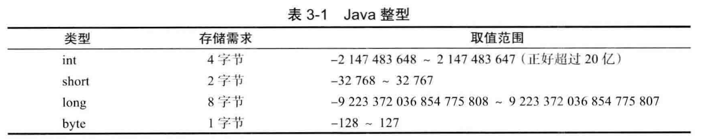
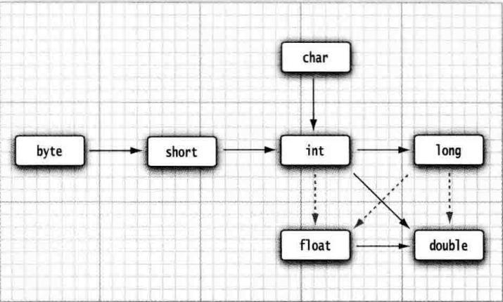
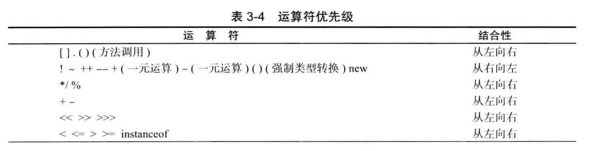
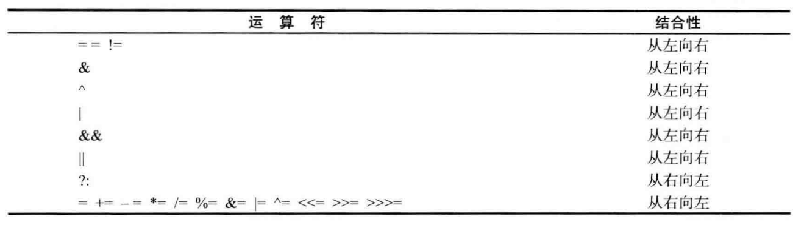
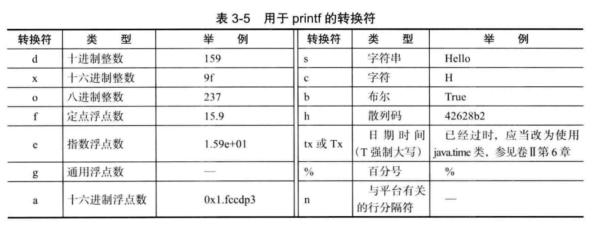
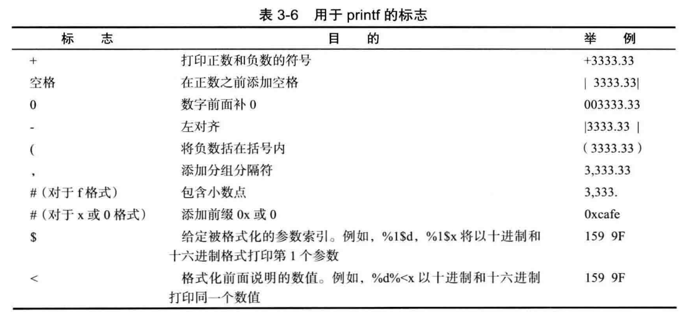
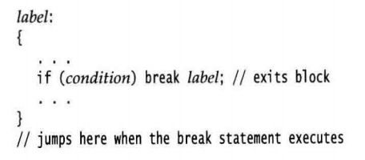
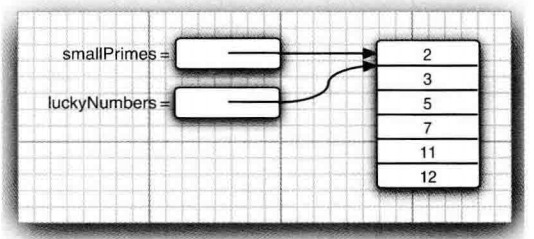

语言基础：
- 数据类型
- 字符串
- 运算符
- 控制流程
- 数组
Java 的基本程序设计结构
注 释
/* */ 注释不能嵌套 „ 也就是说， 不能简单地把代码用 /* 和 / 括起来作为注释， 因为这段代码本身可能也包含一个 \/
数 据 类 型（8）
整型

长整型数值有一个后缀L或者l，例如40000000000L
浮点

float后缀有个F或f，double后缀D或者d，没有后缀默认double。
除此之外还有三个特别的浮点类型：
- Double.POSITIVE_INFINITY（正无穷）
- Double.NEGATIVE_INFINITY（负无穷）
- Double.NaN（不存在）
其中Double.NaN不是一个数字——if (x = Double.NaN) // is never true
char
char类型原本用于表示单个字符。不过，现在情况已经有所变化。 如今，有些 Unicode字符可以用一个 char值描述，另外一些 Unicode 字符则需要两个 char 值。所以不要在程序中使用 char 类型
Unicode 转义序列会在解析代码之前得到处理—>java开发手册要求不可用//来注解的原因就在此
boolean
整型值和布尔值之间不能进行相互转换。
变 量
java不区分变量的声明和定义
常 量
关键字 final 表示这个变量只能被赋值一次。一旦被赋值之后，就不能够再更改了。习惯上,常量名使用全大写。
在 Java 中，经常希望某个常量可以在一个类中的多个方法中使用，通常将这些常量称为类常量。可以使用关键字 static final设置一个类常量。
运 算 符
当参与 / 运算的两个操作数都是整数时，表示整数除法；否则，表示浮点除法。
strictfp—>这个关键字是精确计算关键字，使用方法—->public static strictfp void main(String[] args)
数学函数与常量
对于数学这一块有java.lang.math库，列举一下关键的方法和常量：
| E | PI | round() |
|---|---|---|
| abs() | ceil() | exp() |
| floor() | log() | max() |
| min() | pow() | sqrt() |
import static java.1ang.Math.*;可以静态导入
类型转换
自动类型转换

强制类型转换
double x = 9.997;
int nx = (int) Math.round(x);结合赋值、自增自减、关系、位、优先级


字 符 串
子串
substring 方法的第二个参数是不想复制的第一个位置。
substring 的工作方式有一个优点：容易计算子串的长度。字符串 s.substring(a, b) 的长度为 b-a。
拼接
+拼接—>将一个字符串与一个非字符串的值进行拼接时，后者被转换成字符串.
静态join拼接—->String all = String.join(" / ", "S", "M", "L", "XL"); // S / H / L / XL
不可变字符串
String永不可变！
不可变字符串却有一个优点：编译器可以让字符串共享。为了弄清具体的工作方式，可以想象将各种字符串存放在公共的存储池中。字符串变量指向存储池中相应的位置。如果复制一个字符串变量， 原始字符串与复制的字符串共享相同的字符。共享带来的高效率远远胜过于提取、 拼接字符串所带来的低效率。
字符串相等
.equals—->判断内容是否相等
==—->判断字符串是否放在同一个位置
实际上只有字符串常量是共享的，而 + 或 substring 等操作产生的结果并不是共享的。因此，千万不要使甩== 运算符测试字符串的相等性， 以免在程序中出现糟糕的 bug。
空 串 与 Null 串
有时要检查一个字符串既不是 null 也不为空串，这种情况下就需要使用以下条件：if (str != null && str.length() != 0)
首先要检查 str 不为 null。 如果在一个 null 值上调用方法， 会出现错误。
码点和代码单元
明确一下，char等于一个代码单元，unicode等于一个或者两个代码单元。所以charAt(index)可能无法取到第index+1个char，所以啊！不要使用char
String API
看官方api文档
构 建 字 符 串
如果需要用许多小段的字符串构建一个字符串， 那么应该按照下列步骤进行。 首先， 构建一个空的字符串构建器：StringBuilder builder = new StringBuilder();
当每次需要添加一部分内容时， 就调用 append 方法。builder.append(ch); // appends a single characterbui1der.append(str); // appends a string
在需要构建字符串时就凋用 toString 方法， 将可以得到一个 String 对象， 其中包含了构建器中的字符序列。String completedString = builder.toString();
输入输出
读取输入
输入需要Scanner的支持如下：
Scanner in = new Scanner(System.in);
String name = in.nextLine();就可以得到输入的nextline了，但这主要是使用了java.utils.Scanner包
除了上面基本的监听io设备以输出的方式，还有以下
格式输出
java学的c的printf,对于printf怎么用，java也可以一样的用


文件输入与输出
Scanner in = new Scanner(Paths.get("myfile.txt"), "UTF-8");—–>读文件
PrintWriter out = new PrintlulriterC'myfile.txt", "UTF-8");—–>写文件
控 制 流 程
大致上，块域、条件if、循环while、确定循环for、多重选择switch、中断控制都和c一致，特别的有：
java有一个标签块的东西，标签块搭配break [tab]可以实现跳出指定块的操作。例如下：

大 数 值
如果基本的整数和浮点数精度不能够满足需求， 那么可以使用java.math 包中的两个很有用的类：Biglnteger 和 BigDecimal 这两个类可以处理包含任意长度数字序列的数值。Biglnteger 类实现了任意精度的整数运算， BigDecimal 实现了任意精度的浮点数运算。使用静态的 valueOf方法可以将普通的数值转换为大数值：Biglnteger a = Biglnteger.valueOf(100);
遗憾的是，不能使用人们熟悉的算术运算符（如：+ 和 *) 处理大数值。 而需要使用大数值类中的 add 和 multiply 方法。
BigInteger c = a.add(b); // c = a + b
BigInteger d = c.multiply(b.add(BigInteger.valueOf(2)));//d=c*(b+2)关于大数值的api看官方文档，java.math.BigInteger
数 组
数组长度不要求是常量： new int[n] 会创建一个长度为 n 的数组。
一旦创建了数组， 就不能再改变它的大小（尽管可以改变每一个数组元素）0 如果经常需要在运行过程中扩展数组的大小， 就应该使用另一种数据结构—数组列表（ array list)。
foreach
for (int element : a)
System.out.println(element):不用考虑下标的遍历，很常用，也可以通过如下遍历：
System.out.println(Arrays.toString(a));这些数据元素被放在括号内， 并用逗号分隔。
数组初始化以及匿名数组
int[] smallPrimes = { 2, 3, 5, 7, 11, 13 };—->这是初始化数组
new int[] { 17, 19, 23, 29, 31, 37 }—->这是匿名数组
数组长度为 0 与 null 不同
数组拷贝
变量引用同一个数组
int[] luckyNumbers = smallPrimes; 1uckyNumbers[S] = 12; // now smallPrimes[5] is also 12
copyOf
luckyNumbers = Arrays.copyOf(luckyNumbers , 2 * luckyNumbers.length);
命令行参数
每一个 Java 应用程序都有一个带 String arg[]参数的 main 方法。这个参数表明 main 方法将接收一个字符串数组， 也就是命令行参数。
数组排序
Arrays.sort(a);这个方法使用了优化的快速排序算法。快速排序算法对于大多数数据集合来说都是效率比较
高的。
多维数组
int[][] magicSquare = { {16, 3, 2, 13}， {5, 10, 11, 8}, (9, 6, 7, 12}, {4, 15, 14, 1} }；多维数组的操作：
for (double row : a)
for (double value : row)
//do something with valueSystem.out.println(Arrays.deepToString(a));不规则数组
java中没有多维数组，都应该理解为数组的数组